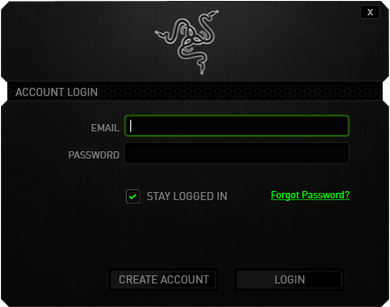

Razer
Razer is a company that makes software and hardware for gamers.
Spyware level: EXTREMELY HIGH
Data collection
Razer confirms that they collect this data:
- Full name
- Contact info
- Info you send when you contact them (texts and such)
- The time you use their services and products
- Info you send via polls
- IP, geolocation, OS and browser version
Razer also admits[1][2] that they sell users' info. They also claim that the employees can see this data. Razer FORCES you to create an account to use YOUR products.
Where is the option "Sign in later" at? Without an account, you CAN'T configure your keyboard, change your mouse DPI and RGB configuration and such, this means that the configurations you set to your (Razer) peripherals are in somebody else's PC, and Razer knows who has that (your) info.